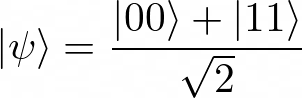
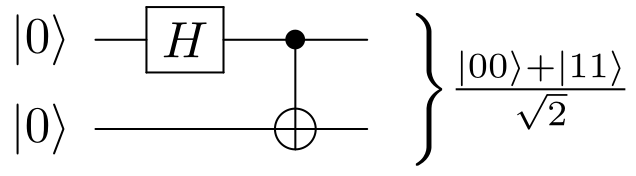
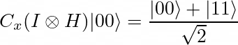
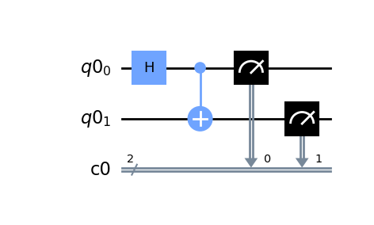
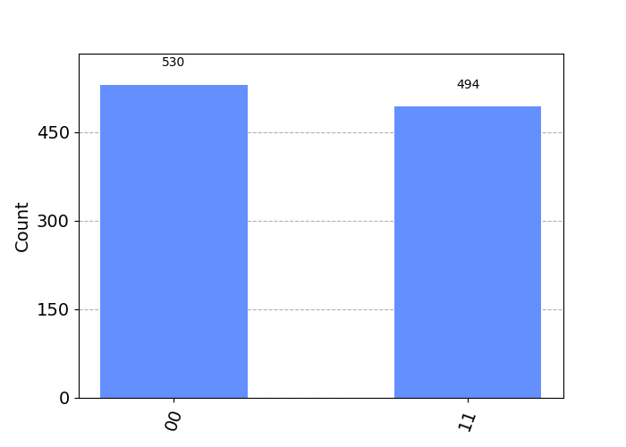

In the previous articles of CQ em Português (Qubits and Quantum Logic Gates), some basic and theoretical concepts of quantum computing were presented. In this article, we will move on to a more practical, yet equally basic, approach, using the Python language and the Qiskit SDK. The practical exercise taught here is the generation of a Bell state which, as already explained in the article about qubits, is a state of two entangled qubits (Eq. 1).

A Bell state can be generated with a Hadamard gate and a Controlled-NOT gate, as shown in the following figure:

This quantum circuit can be represented algebraically as follows:

where Cx corresponds to the Controlled-NOT gate, H corresponds to the Hadamard gate and I corresponds to a 2x2 identity matrix.
Qiskit is currently one of the main development tools for quantum computing. This powerful SDK contains resources for the manipulation, transpilation, simulation and execution of quantum algorithms, and also includes a large collection of “helpers” for the implementation of quantum and hybrid algorithms for optimization, machine learning, arithmetic, chemistry, etc.
Qiskit is cross-platform and its installation process is quite simple: just type “pip install qiskit” in the terminal.
Use the “import qiskit” command to load the resources of the Qiskit library.
import qiskit
For this exercise, it is necessary to create a quantum register of 2 qubits and a classical register of 2 bits. This can be done with the following code snippet:
qr = qiskit.QuantumRegister(2)
cr = qiskit.ClassicalRegister(2)
To build the quantum circuit shown in fig. 1, it is first necessary to create a QuantumCircuit object with both registers included.
qc = qiskit.QuantumCircuit(qr, cr)
After creating the QuantumCircuit object, use the h and cx methods to add the Hadamard and Controlled-NOT gates to the circuit.
qc.h(qr[0]) #Adds a Hadamard gate on qubit 0
qc.cx(qr[0], qr[1]) #Adds a Controlled-NOT gate with qubit 0 as control and qubit 1 as target
To complete the construction of the circuit, it is necessary to add measurement gates. These gates are responsible for measuring the state of the quantum register and storing the result in the classical register (remember what was said about the collapse of the quantum state in the article about qubits). To add these gates, use the measure method.
qc.measure(qr, cr)
It is possible to visualize the built circuit with the draw method. If you have the matplotlib library installed, use the following code snippet:
import matplotlib.pyplot as plt
qc.draw(output='mpl')
plt.show()
The result is this figure:

The Qiskit SDK has a simulator called Aer. There is a small set of simulation methods available in Aer, each one with its advantages and disadvantages. For this exercise, I chose the statevector method.
To load the simulator, use the following line of code:
sim = qiskit.Aer.get_backend('aer_simulator_statevector')
To run the simulation, use the run method of the simulator. This method returns an AerJob object.
job = sim.run(qc, shots=1024)
Note that there is a “shots” argument in the run method. This argument specifies the number of times the quantum circuit is executed.
To get the simulation results, use the result method of the AerJob class. This method returns a Result object containing several pieces of information about the simulation.
res = job.result()
To get the measurements of the final state of the quantum circuit, use the get_counts method of the Result class. This method returns a dict containing the bit-strings obtained in the simulation, each one with its respective frequency.
counts = res.get_counts()
print(counts)
#Output: {'00': 530, '11': 494}
Note that, in this simulation, the bit sequence “00” was obtained 530 times and the sequence “11” was obtained 494 times.
Using the Matplotlib library (already imported) and the Qiskit plot_histogram function, it is possible to turn this dict into a histogram.
from qiskit.tools.visualization import plot_histogram
plot_histogram(counts)
plt.show()
The result is the following figure:

The Bell state is formed by a linear combination of two pure states: |00> and |11>. Theoretically, the probabilities of the Bell state collapsing into |00> and |11> are equal, that is, both are 1/2. In the simulation, the relative frequencies obtained were 530/1024=0.52 and 494/1024=0.48. By the law of large numbers, the larger the number of simulation shots, the closer to 1/2 these relative frequencies will be. However, it is worth pointing out that the statevector simulation method is ideal, that is, it does not take into account the noise of a real quantum computer.